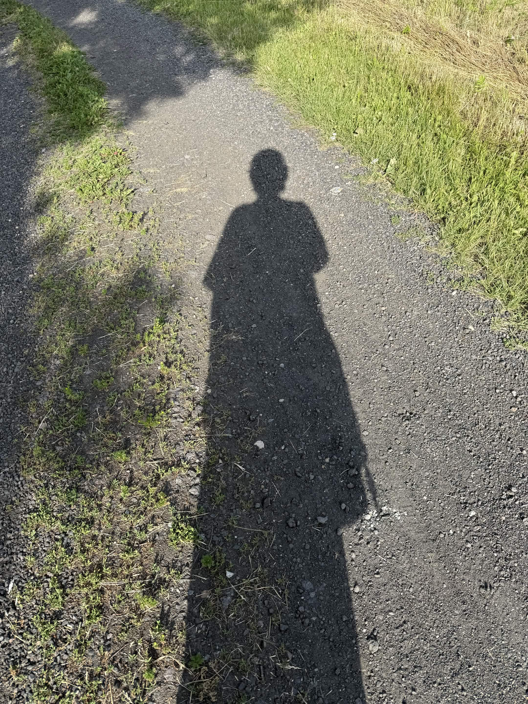

23 sierpnia 2026
Moja Historia
W tym artykule znajduje się moja historia, oraz historia tego, jak znalazłam Boga i sens w wierze.
Czytaj dalej →BLOG • ŻYCIE • WIARA
Jest to mój osobisty blog. Będę tu opowiadać, o moim życiu, o tym, jak Bóg w nim działał i ciągle działa. W przyszłości odpowiem też tu na pewne inne kwestie i jak patrzy na nie wiara, Biblia oraz Kościół.
„Jeżeli Bóg z nami, któż przeciwko nam?”
Rz 8,31OSTATNIO NA BLOGU
23 sierpnia 2026
W tym artykule znajduje się moja historia, oraz historia tego, jak znalazłam Boga i sens w wierze.
Czytaj dalej →
PO DRUGIEJ STRONIE EKRANU
Tak na prawdę mam na imię Jola. Będę tutaj pisać o tym, w co wierzę i jak to wygląda na prawdę, oraz dlaczego, wiara ma sens.
Więcej o mnie →MILITES CHRISTI
Milites Christi do chrześcijańska społeczność na discordzie. Jest tam miejsce na poznanie nowych osób, które również wierzą w Boga, wspólnej modlitwy i czytania Pisma, a przede wszystkim do wspólnego wzrastania.
Poznaj Milites Christi